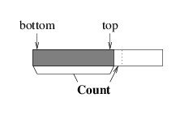

We first need to consider how to define a generic class. In the simplest case, we simply add a type parameter to the class statement, as follows:
public class Stack<T>
{
. . .
}
Within this class definition, T is treated like
any other type, except that the compiler knows nothing about it.
We can declare fields, parameters, and local variables to be of
type T. Even though the compiler knows nothing about
T, it will still do type checking - you cannot assign an
expression of any other type to a variable of type T, and
you can only assign an expression of type T to variables of
either type T or type object (because any type is a
subtype of object). In general, we can define generic data
types with any number of type parameters if more that one generic type is
needed by the data structure. To do this, we would
list the type parameters, separated by commas, between the '<'
and '>' symbols of the generic
class definition. Each of the type parameters is then
treated as a type
within the class definition. We will show how the types
passed as type parameters can be restricted in a later
section.
For the class Stack<T>, only one type parameter is needed. The type parameter T denotes the type of the values that are stored in the stack. Therefore, the array in which we will store the elements will be of type T[ ]. As in the StringBuilder implementation, we will need a private field for this array. This field can be initialized in a manner similar to the StringBuilder implementation; hence, we don't need to write a constructor.
A stack has a public read-only property, Count, which gets the number of elements in the stack (as an int). We can define this property to use the default implementation with a private set accessor, as outlined in the section, "Properties".Before we can delve any further into the implementation, we need to decide how we are going to arrange the elements in the array. Because all of our accesses will be to the top of the stack, it makes sense to keep the bottom element of the stack at location 0, and as we go up the stack, keep each successive element in the next location:
This arrangement makes sense because unless all of the array locations are being used, there is room to push a new element on top of the stack without having to move any pre-existing elements out of its way.
Note the similarity of this arrangement to the implementation of a StringBuilder. Given this similarity, we can implement the Push method in a similar way to how we implemented the Append method for a StringBuilder. Instead of taking a char parameter, the Push method takes a T parameter, but this is the type that we can store in the array. The biggest difference in these two methods is that while Append returns a StringBuilder, Push returns nothing.We now need to implement the public methods that retrieve elements from the stack. We will start with the Peek method, which takes no parameters and returns a T. This method needs to begin with some error checking: if there are no elements in the stack, it needs to throw an InvalidOperationException. We can do this by constructing such an exception and throwing it with the throw keyword:
throw new InvalidOperationException();If there are elements in the stack, we need to return the one at the top. Note from the figure above that the top element is at the location preceding the location indexed by Count.
The other public method to retrieve an element is the Pop method. This method also takes no parameters and returns a T. Part of what it does we have already implemented in the Peek method. In order to avoid duplicating code, we can retrieve the top element using the Peek method, and save it in a local variable so that we can return it when we are finished with this method (avoiding code duplication improves maintainability, as there are fewer places that might need to be modified later). Note that by using the Peek method, we are taking advantage of the fact that it checks whether the stack is empty; hence, there is no need to do that here. Before we can return the value we retrieved, we need to update Count to reflect the fact that we are removing one element.
While what we have described in the preceding paragraph is sufficient for correct functioning, there is one issue we need to address. Note that we have done nothing to the array location that stored the value we popped - it still stores that value. This fact does not impact correctness, however, because after we update the number of elements, we are no longer considering that location to be storing a stack element - its contents are irrelevant. However, there is a performance issue here. If T is a reference type, then the reference stored in this location may refer to a large data structure that is no longer needed by the program. However, because this array still stores a reference to it, the garbage collector cannot tell that it is no longer in use, and consequently, it cannot reclaim the storage.It therefore makes sense to remove what is stored in this array location. However, we run into a difficulty when we try to do this. We can't simply assign null to this location because T might be a value type; hence, the compiler will not allow such an assignment. In order to address this problem, C# has the keyword, default, which can be used to get the default value for a given type. Thus, if T is a reference type, default(T) will give us null, but if T is a value type, it will give us the value whose binary representation is all 0s. In order to free up any memory we might no longer need, it therefore makes sense to assign default(T) to an array location after we are no longer using it.
Finally, we can implement a public Clear method. This method takes no parameters and returns nothing. One way to implement it would be to pop all of the elements, one by one, from the stack. However, this could be very inefficient if the stack contains a lot of elements. A better way is simply to change Count to 0; however, this way prevents the garbage collector from reclaiming storage we no longer need. In order to allow this storage to be reclaimed, we should also replace our array with a new array of the size we used when we initialized this field (note that this is more efficient than replacing every element with the default element of the appropriate type). Because we are no longer using the old array, the garbage collector can reclaim it, along with any otherwise unused data it might refer to.Due to the similarities between this implementation and the StringBuilder implementation, the two data structures have similar performance characteristics. In fact, it is possible to show that any sequence of n operations on an initially empty Stack<T> is done in O(n) time - i.e., in time proportional to n.